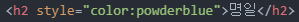
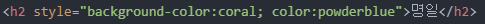

style 속성
CSS라는 컴퓨터 언어의 문법을 살짝 배워보자.
하지만, 이 '살짝'이 CSS전체를 지배하는 혁명적인 문법이라는 걸 꼭 기억하자.
아주 중요한 걸 배우지만, 쉽다.
한 가지 단어를 임의로 작성하고
명일
이 단어에 해당하는 부분을
디자인적으로 바꾸고 싶은 욕심이 생겼다면,
내가 바꾸고 싶은 태그에 style 속성을 쓰면 된다.
그리고 HTML의 사용 설명서에는
onclick안에 JavaScript가 오는 것과 마찬가지로
style 속성 안에는 CSS가 온다고 약속되어 있다.
그럼 우선 폰트 컬러를 바꿔보자.
명일

color를 파우더블루(powderblue)로 바꾸고 리로드를 하면
글자색이 파우더블루로 바뀌는 것을 볼 수 있다.
이 때 style코드 뒤에 오는 코드가 바로 CSS라는
HTML/JS와는 완전히 다른 컴퓨터 언어이다.
그리고 여기 있는 style은 HTML의 문법이다.
즉, HTML 문법인 style을 통해서 웹브라우저에게
style 뒤에 오는 코드가 CSS라는 것을 알려주는 것이고,
'저 CSS코드가 style 태그가 위치하는 태그에 적용되어야 한다.'
라는 것을 알려주고 있는 것이다.
그리고 color:powderblue라는 코드는
CSS라는 컴퓨터 언어의 문법중에서
'속성', 영어로는 Property라고 하는 것이다.
그럼 내가 만약 여기 '명일'이라는 단어 부분에
백그라운드 컬러를 주고 싶다면,
*검색 - CSS background color property
명일

검색후 찾아온 코드를 대입하여 리로드를 하면
이렇게 백그라운드 컬러가 생기는 것을 볼 수 있다.
즉, style이라는 속성에 CSS를 넣으면 디자인을 할 수 있다는 것과
이 속성이라는 문법의 구조를 파악하고 있다면,
이제부터 우리는 검색을 통해 문제를 해결할 준비가 된 것이다.
혁명적인 순간이다.
- 생활코딩1)HTML+JS (script태그)
- 생활코딩2)HTML+JS (이벤트)
- 생활코딩3)HTMl+JS (콘솔)
- 생활코딩4)문자열과 숫자
- 생활코딩5)변수와 대입연산자
- 생활코딩6)웹브라우저 제어
- 생활코딩7)CSS기초 (style속성)
- 생활코딩8)CSS기초 (style태그)
- 생활코딩9)CSS기초 선택자
- 생활코딩10)
- 생활코딩11)
- 생활코딩12)
- 생활코딩13)
- 생활코딩14)
- 생활코딩15)
- 생활코딩16)
- 생활코딩17)
- 생활코딩18)
- 생활코딩19)
- 생활코딩20)
2022.06.14 김명일
유트브 링크